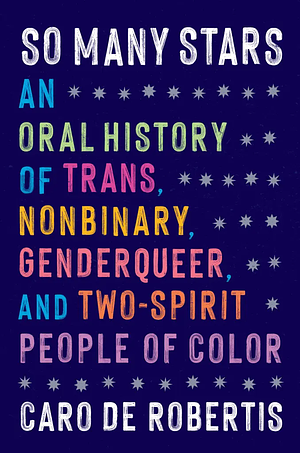
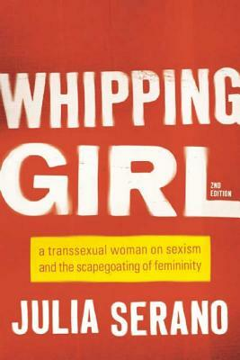
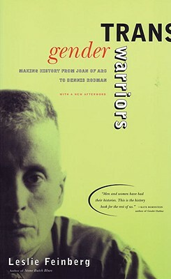
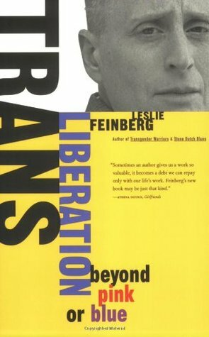
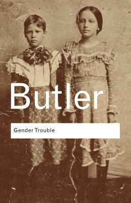

-
Transgender History, Third Edition: A Resource for Today's
Struggle—And Tomorrow's
Through her explanation of central concepts and terms, informative sidebars, and
brief
biographies of trans pioneers, Stryker reminds readers of one crucial truth:
Transgender
people have always been here. more
-

So Many Stars: An Oral History of Trans, Nonbinary,
Genderqueer,
and
Two-Spirit People of Color
So Many Stars knits together the voices of trans, nonbinary, genderqueer and
two-spirit
elders of color as they share authentic, intimate accounts of how they created space
for
themselves and their communities in the world, how they pursued their passions, and
how
they
continue to be at the vanguard of social change. more
-

Whipping Girl: A Transsexual Woman on Sexism and the
Scapegoating
of
Femininity
Julia Serano shares her powerful experiences and observations - both pre- and
post-transition
- to reveal the ways in which fear, suspicion, and dismissiveness toward femininity
shape
our societal attitudes toward trans women, as well as gender and sexuality as a
whole.
more
-

Transgender Warriors: Making History from Joan of Arc to
Dennis
Rodman
In this fascinating, personal journey hrough history, Leslie Feinberg uncovers
persuasive
evidence that there have always been people who crossed the cultural boundaries of
gender.
more
-

Trans Liberation: Beyond Pink or Blue
In Trans Liberation, Feinberg has gathered a collection of hir speeches on trans
liberation
and its essential connection to the liberation of all people. more
-
Gender Outlaw: On Men, Women and the Rest of Us
On one level, Gender Outlaw details Bornstein’s transformation from heterosexual male
to
lesbian woman. But this particular coming-of-age story is also a provocative
investigation
into our notions of male and female, from a self-described nonbinary transfeminine
diesel
femme dyke who never stops questioning our cultural assumptions. more
-

Gender Trouble: Feminism and the Subversion of Identity
Arguing that traditional feminism is wrong to look to a natural, 'essential' notion
of
the
female, or indeed of sex or gender, Butler starts by questioning the category
'woman'
and
continues in this vein with examinations of 'the masculine' and 'the feminine'. Best
known
however, but also most often misinterpreted, is Butler's concept of gender as a
reiterated
social performance rather than the expression of a prior reality. more